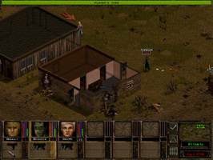

Jagged Alliance 2
Dieser Artikel wurde für die folgenden Ubuntu-Versionen getestet:
Ubuntu 16.04 Xenial Xerus
Zum Verständnis dieses Artikels sind folgende Seiten hilfreich:
 Jagged Alliance 2
Jagged Alliance 2  - Das Land Aruldo wurde von einem tyrannischen Diktator übernommen. Der frühere Herrscher beauftragt erfahrene Söldner um das Land von der Herrscherin zu befreien. Mit einem Startkapital von 40.000 Dollar gilt es eine schlagkräftige Truppe zusammenzustellen...
- Das Land Aruldo wurde von einem tyrannischen Diktator übernommen. Der frühere Herrscher beauftragt erfahrene Söldner um das Land von der Herrscherin zu befreien. Mit einem Startkapital von 40.000 Dollar gilt es eine schlagkräftige Truppe zusammenzustellen...
|  | |
| Hauptmenü | Spielszene |
Installation¶
Nativ¶
Die Installationsroutine wurde für eine mitlerweile veraltete Linuxversion entwickelt und funktioniert nicht mehr auf modernen Systemen. Einen Ausweg bietet die Installation via Stracciatella.
Hinweis:
Für die Installation werden die Original-CDs benötigt.
Stracciatella¶
Vorbereitung¶
Folgende Pakete müssen im Vorfeld installiert [1] werden:
build-essential
libsdl-gfx1.2-dev (universe)
unshield
 mit apturl
mit apturl
Paketliste zum Kopieren:
sudo apt-get install build-essential libsdl-gfx1.2-dev unshield
sudo aptitude install build-essential libsdl-gfx1.2-dev unshield
Spieledaten¶
Im ersten Schritt die benötigten Spieledaten von den CDs kopieren. Die Vorgehensweise für die Linux- und Windowsversion unterscheiden sich geringfügig.
Linux-CDs¶
Im Homeverzeichnis das Installationsverzeichnis (z.B. ~/Spiele/ja2) anlegen. In dieses werden im ersten Schritt von der Installations-CD die Dateien base.tar.gz, cinematics.tar.gz, maps.tar.gz und speech.tar.gz kopiert. Nachdem diese entpackt [2] wurden, löscht man die überflüssigen .tar.gz-Dateien und kopiert von der Spiele-CD den Ordner data in das Installationsverzeichnis. Nachdem der Kopiervorgang abgeschlossen ist werden einige Ordner nach dem folgenden Schema umbenannt:
data
 Data
DataData/tilecache
Data/TILECACHE
Windows-CDs¶
Von der Installations-CD die Datei data1.cab mit unshield [8] in den vorher erstellten Ordner ~/Spiele/ja2/temp entpacken und anschließend von der Spiele-CD die Datei intro.slf ebenfalls in diesen Ordner kopieren.
Für die Installations-CD ist folgender Befehl [3] zu verwenden:
unshield -d ~/Spiele/ja2/temp x /media/cdrom0/INSTALL/data1.cab
Um das Intro von der Spiele-CD zu kopieren:
find /media/cdrom0 -iname "intro.slf" -exec cp {} ~/ja2/temp \; Anschließend die benötigten Dateien sortieren:
mkdir -p ~/Spiele/ja2/data/tilecache && find ~/Spiele/ja2/temp/ -iname "*.slf" -exec mv {} ~/Spiele/ja2/data \; && find ~/Spiele/ja2/temp/ -iname "*.sti" -exec mv {} ~/Spiele/ja2/data/tilecache \; && find ~/Spiele/ja2/temp/ -iname "*.jsd" -exec mv {} ~/Spiele/ja2/data/tilecache \; Abschließend kann der temporäre Ordner gelöscht werden:
rm -R ~/Spiele/ja2/temp
Alle Dateien der Formate slf, sti und jsd sind nun auf die Ordner ~/Spiele/ja2/data und ~/Spiele/ja2/data/tilecache verteilt.
Quellcode¶
Im zweiten Schritt von JA2-Stracciatella Continued 
 den Quellcode herunterladen und entpacken [2]. In den neuen Ordner wechseln und eine Kopie der Datei config.template anlegen. Diese wird mit dem folgenden Befehl [3] als config.default hinterlegt.
den Quellcode herunterladen und entpacken [2]. In den neuen Ordner wechseln und eine Kopie der Datei config.template anlegen. Diese wird mit dem folgenden Befehl [3] als config.default hinterlegt.
cp config.template config.default
Die Kopie mit einem Editor [4] config.default bearbeiten. Hier die folgenden Werte ändern:
Anpassung¶
LNG := ENGLISH SGPDATADIR := /home/BENUTZERNAME/Spiele/ja2
Hinweis:
Bei der Deutschen Version ist LNG := GERMAN zu verwenden.
Kompilieren¶
Anschließend die Binärdatei aus dem Quellcode erstellen [5]:
make make lowercase cp ja2 ~/Spiele/ja2/
Konfigurationsdatei¶
Abschließend im Homeverzeichnis den versteckten Ordner .ja2 erstellen und die Konfigurationsdatei ja2.ini in diesem anlegen [4]. In der Datei wird der Pfad zum Spiel hinterlegt und anschließend gespeichert:
data_dir = /home/BENUTZERNAME/Spiele/ja2
Das Spiel kann aus dem Installationsverzeichnis über ja2 gestartet [5] und auf Wunsch ein Menüeintrag erstellt [7] werden.
Pakete benutzen¶
Alternative zum Quellcode kann man auch auf die Pakete zurückgreifen [9]. Dem Spiel muss man beim Start dann jedoch die Sprachversion mitgeben [6].
ja2 -resversion GERMAN -res 2560x1440 -fullscreen
Hinweis!
Fremdpakete können das System gefährden.
Einstellungen¶
Über den Menüpunkt "Options" gelangt man zum Einstellunsmenü.
Mods¶
Für das Spiel gibt es eine Reihe von Modifikationsmöglichkeiten (Charaktere, Soundeffekte, ...). Diese können von unten stehenden Seite heruntergeladen werden.

Detaillierte Informationen zu Modifikation des Spiels sind unter pbworks.com und jaggedalliance.de zu finden..
Hinweis:
Einige Mods stehen nur für Windows zu Verfügung. Auf der Seite oder im Verzeichnis des entpackten Mods findet man eine Datei mit Instruktionen zur Installation.
Deinstallation¶
Hier genügt es das Installationsverzeichnis (z.B. ~/Spiele/ja2), den versteckten Ordner .ja2 im Homeverzeichnis und ggf. einen vorgenommenen Menüeintrag [7] zu entfernen.
Tastenkürzel¶
| Tastenkürzel | |
| Taste(n) | Funktion |
| Alt + X | Spiel beenden |
| Alt + ⏎ | Vollbid- / Fenstermodus |
Eine umfassende PDF mit allen Tastenkürzeln findet man auf pbworks.com .

Infobox¶
| Jagged Alliance 2 | |
| Originaltitel: | Jagged Alliance 2 |
| Genre: | Strategie |
| Sprache: | |
| Veröffentlichung: | 1999 (Windows) / 2001 (Linux) |
| Publisher: | Sir-Tech |
| minimale Systemvoraussetzungen: | Pentium II / 325 MB Festplattenspeicher / 32 MB RAM |
| Medien: | CDROM |
| Strichcode / EAN / GTIN: | 4040999021002 |
| Läuft mit: | nativ |
- Erstellt mit Inyoka
-
 2004 – 2017 ubuntuusers.de • Einige Rechte vorbehalten
2004 – 2017 ubuntuusers.de • Einige Rechte vorbehalten
Lizenz • Kontakt • Datenschutz • Impressum • Serverstatus -
Serverhousing gespendet von